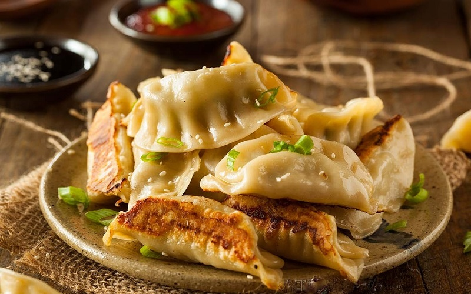

Khám phá Nhà hàng The Rice Bowl
"Ẩm thực ngon bắt nguồn từ tình yêu và sự tỉ mỉ trong từng chi tiết."
Chào mừng bạn đến với The Rice Bowl — điểm đến ẩm thực nơi hội tụ tinh hoa ẩm thực Việt cùng sự giao thoa đầy sáng tạo với các nền ẩm thực Á – Âu. Chúng tôi tin rằng mỗi món ăn không chỉ ngon mà còn mang câu chuyện và tâm huyết của người đầu bếp.

Sứ mệnh & Chất lượng
Từ nguyên liệu tươi ngon mỗi ngày đến quy trình chế biến kỹ lưỡng, chúng tôi đặt trọn đam mê để mang đến thực khách trải nghiệm vị giác trọn vẹn nhất. Đội ngũ bếp là những người nghệ sĩ luôn tìm tòi và đổi mới để mỗi bữa ăn trở thành một hành trình khám phá hương vị.
Không gian & Dịch vụ
Không gian hiện đại pha chút mộc mạc, ấm cúng phù hợp cho gia đình, gặp gỡ bạn bè, đối tác hay tổ chức sự kiện riêng tư. Nhân viên phục vụ tận tâm, chuyên nghiệp là yếu tố làm nên sự khác biệt của The Rice Bowl.
Khai Vị Đặc Sắc
"Mở đầu bữa ăn trọn vẹn bằng những món khai vị tinh tế."
Soup cà chua hải sản (Âu)

Súp cà chua hải sản là một sự kết hợp tinh tế giữa vị chua ngọt từ cà chua và hương vị đặc trưng của hải sản như tôm, cá, sò hay mực. Đây có thể là một món súp dạng bisque kem sánh mịn hoặc stew hơi đặc với nhiều miếng hải sản tươi ngon. Món ăn này mang đậm hơi thở của Pháp (bisque), Ý–Mỹ (cioppino) hay Mỹ Latin (caldo de siete mares).
Bruschetta (Món Ý)

Bruschetta là món khai vị nổi tiếng của ẩm thực Ý, xuất phát từ vùng Lazio và Toscana. Những lát bánh mì nướng giòn được chà tỏi, rưới dầu ô liu, phủ thêm cà chua tươi, húng quế, chút muối và tiêu tạo nên hương vị tươi mới, kích thích vị giác.
Há Cảo Nhật Bản (Món Nhật)
Há cảo Nhật Bản, hay còn gọi là Gyoza, có nguồn gốc từ Trung Hoa (jiaozi) nhưng được người Nhật biến tấu thành món ăn riêng biệt. Lớp vỏ mỏng, nhân thịt đậm đà, chiên áp chảo vừa giòn vừa mềm, Gyoza thường xuất hiện trong các quán ramen, izakaya và bữa cơm gia đình.
Gỏi ngó sen (Món Việt)

Gỏi ngó sen là món ăn thanh mát, giòn ngon, phổ biến trong các bữa tiệc người Việt. Ngó sen non giòn hòa quyện cùng tôm tươi, thịt ba chỉ, rau thơm và nước mắm pha chua ngọt. Món này không chỉ ngon miệng mà còn là món ăn giải nhiệt tuyệt vời cho những ngày oi nóng.
Món Chính & Tráng Miệng
"Sự kết thúc ngọt ngào cho bữa tiệc vị giác."
Bò nướng sốt tiêu đen
Thịt bò tươi được tẩm ướp gia vị đậm đà, nướng vừa chín tới giữ nguyên độ mọng nước. Sốt tiêu đen sánh mịn, cay nồng nhẹ nhàng tôn lên vị ngọt tự nhiên của thịt. Món ăn thích hợp cho buổi tối ấm cúng bên người thân.